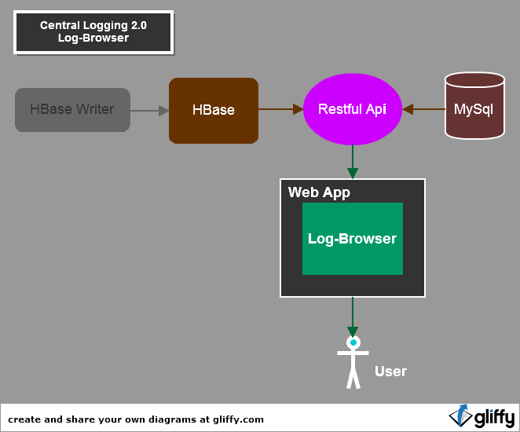
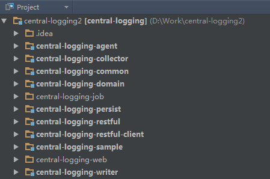
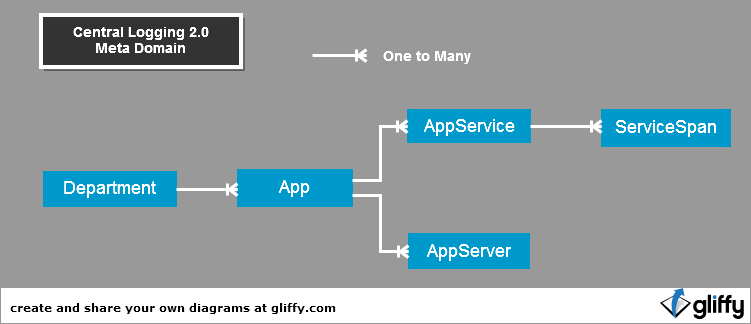
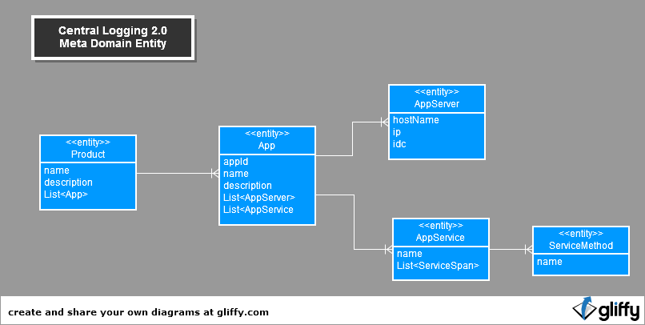
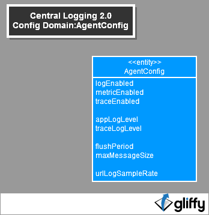

Logging 2.0上线，公司内越来越多的应用接入，各应用部门对及时快速准确获得相应日志的需求越来越高，也越来越多样化。 目前我们已经提供了日志查询的应用LogView和日志转存功能。但还不能真正满足用户的需求。
为了提供给用户更好的服务与用户体验，现开启了这个新项目LogBrowser，提供给用户以直觉导航浏览式的方式查看日志。
当前Logging2.0自身的应用，数量已超过6个，主要有LogView TraceView，而且全都基于开源项目，架构也不统一，难以扩展与维护, 浪费了大量的人力资源，而且不能带来令人满意的回报。 接下来的目标就是将这些应用慢慢整合，最终合并成两个应用，一个用于提供数据的RestfulApi, 一个用于提供Web界面操作的LogBrowser. 接下来以这个项目为契机，开启这种进化。
Logging2.0当前后端的HBase设计也存在一定的问题，在查询速度与并发访问下表现并不能使人满意，存在大量浪费带宽的行为。 在此次项目开发中，也会使用新方案，改善这种情况。

总体架构如上，分为三种角色: 数据源 、 Restful Api接口 、 web应用
数据源分为两种，HBase和MySql.
HBase:
MySql:
logging/apps 获取所有的app列表
logging/config/agent-configs 获取agent的日志配置
logging/data/logs?app=110101&startDate=2013-01-01 18:00:00 获取某个app指定时间段的日志数据
当前Central-Logging 2.0的组成：

Central-Logging 2.0中Log-Browser相关的将划分为三个子项目，挂在Central-Logging 2.0下面。
com.ctrip.freeway.domain
com.ctrip.framework.freeway.rest
com.ctrip.framework.freeway.web
Central Logging 2.0中的数据模型分为三类:meta data(元数据 ), configration data(配置数据), log data(日志数据: log metric span event). 这些领域模型对应的Java Bean在项目central-loggging-domain里定义

元数据的领域模型主要是以App为核心展开的：
总结: 一个部门下可以有多个应用;一个应用可以有多台服务器;一个应用可以多个服务;一个服务可以有多个方法

Department:
| 属性 | 类型 | 说明 |
|---|---|---|
| name | String | 部门名称 |
| description | String | 部门描述 |
App:
| 属性 | 类型 | 说明 |
|---|---|---|
| appId | String | 公司分配给这个应用的一个应用号，通常为6位数字 |
| name | String | 应用名称 |
| description | String | 应用描述 |
| appServers | List<AppServer> | 应用拥有的服务器列表 |
| appServices | List<AppService> | 应用中被trace的服务列表 |
AppServer:
| 属性 | 类型 | 说明 |
|---|---|---|
| hostName | String | 服务器的hostName |
| ip | String | 服务器的ip |
AppService:
| 属性 | 类型 | 说明 |
|---|---|---|
| name | String | service名称 |
| serviceSpans | List<ServiceSpan> | 服务所拥有的方法列表 |
ServiceSpan:
| 属性 | 类型 | 说明 |
|---|---|---|
| name | String | 方法名称 |
无数数据的来源分为两种：
配置数据分为两类，一类是对Agent的配置信息，一类是对Metric Namespace的配置信息。
由类AgentConfig表示

AgentConfig:
| 属性 | 类型 | 说明 |
|---|---|---|
| key | String | 指定的一个Key,将确定对谁生效。通常为一个appId或server ip, 特殊key:"global",代表agent的默认配置 |
| appLogEnabled | boolean | 表明是否开启日志 |
| traceEnabled | boolean | 表明是否开启trace |
| metricEnabled | boolean | 表明是否开启metrics |
| appLogLevel | LogLevel | 日志级别，前提需要开启appLogEnabled |
| traceLogLevel | LogLevel | trace中的日志级别，前提需要开启traceLogEnabled |
| flushPeriod | int | 毫秒，agent中打包chunk的频率 |
| maxMessageSize | int | KB，一条 log中message的最大size |
| urlLogSampleRate | double | url trace的采样率 |